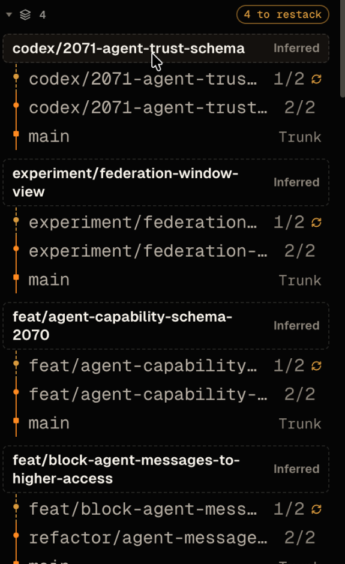
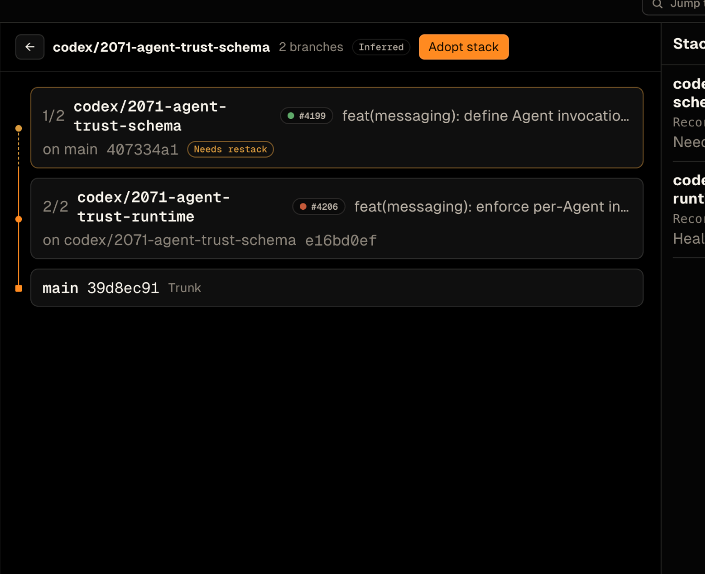
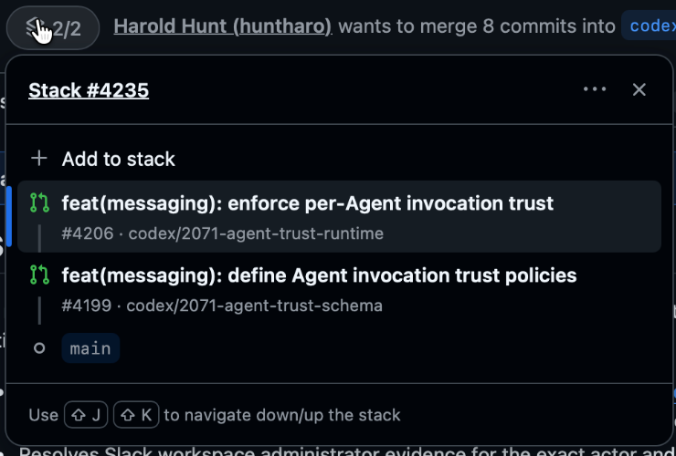

“It opened automatically while I was looking at the tree. It shouldn’t do that. … It shows main as the one closest to 1/2 … as the furthest away from main. Like the lineage is backwards. … What this was supposed to do was give us a UX to understand that a stack exists. Kind of like the GitHub screenshot I sent. I would think … on the PR cards … we might have added a lane on the left or right of the card that show the stack and the position of that PR in the stack and status of the other PRs in the stack.”Harold, 2026-11-23, after #649 and #651 shipped
The first round, Stacked PRs - UX Review, spent five of its six turns on the engine: the catalog, replay, locks, undo and MCP. It gave people one picture, a Stacks section listing branch names. The build followed that picture and then drew it upside down. This round is about the person. You look at a pull request and see that it sits in a stack, where it sits, and how the other PRs in the stack are doing. You get there without leaving the list and without a view taking over the main pane.
Decisions for review: the stack rail on PR cards (3a, recommended), one popover shared by the rail, the PR view and the graph (4), and shrinking the Stacks section to one row per stack (5a). Assumptions to check: position numbers keep GitHub’s meaning, so 1 is the PR on trunk. Every list of a stack reads top of stack first, with trunk last, like GitHub. Data: the trust stack’s PR numbers, titles, branches, states and diff size are from Harold’s PwrAgnt screenshots. Its check counts, file names, worktree name and behind-main count are invented, and so are the ledger stack and the other PR titles.
PwrAgnt has four two-PR stacks open. The sidebar spends 16 rows on them. The stack view replaced the Lineage pane without being asked. GitHub shows the same stack as one pill and a three-line popover.



The stack view takes over the main pane after a click that wasn’t asking for it. The prime suspect is .stack-graph-bracket. It’s a 9px button in the lane gutter of every stack-tip row in Lineage, right where people click commits. Next are the sidebar stack title rows, which sit in the tree and open the view on a plain click. Opening a whole pane needs an explicit command.
Every list renders layers[0] first and then trunk. So 1/2, the PR on main, prints at the top, and main prints two rows below it. Main ends up beside the branch furthest from it. The first round asked for the opposite: “rows read top to bottom as GitHub’s UI, with trunk last.” GitHub draws #4206, then #4199, then main.
Each stack gets a title that repeats its bottom branch name. Then come branch rows that truncate to the same prefix (codex/2071-agent-trus…), then a main · Trunk row repeated in every stack. Four stacks take 16 rows and push Pull requests off screen.
A stacked PR card gets a small 1/2 button and nothing more. It doesn’t show the other PR, whether that PR is merged or failing, or that the two cards belong together. Clicking 1/2 swaps the whole main pane.
The sidebar and the cards in the view lead with branch names and bury the PR number and title. People recognize #4206 enforce per-Agent invocation trust, not codex/2071-agent-trust-runtime.
GitHub calls this Stack #4235, so it’s a linked stack. PwrGit labels it Inferred and makes Adopt stack the orange primary button without saying what adopting does. Provenance has to come from GitHub’s stack when one exists.
“Stack health” lists the same branches again with “Recorded parent tip 9b40b575” and “Health unknown”. An inferred stack has no record, and “unknown” isn’t a state anyone can act on.
“4 to restack” and a ⟳ on every 1/2 fire because main moved. Restack is disabled on these stacks, so the header sounds an alarm with no action behind it. Being behind main is a quiet fact about the bottom PR. Amber is for a tracked stack you can actually restack.
A stack is a tower standing on trunk. Wherever PwrGit lists one, in the sidebar group, the popover, the stack view or a tooltip, rows run from the highest position down to 1. Trunk comes immediately after 1, with the spine joining them. Position numbers keep GitHub’s meaning: n/N counts up from trunk, so the number on the top row is N/N. Lineage already draws commits newest first, so this order also matches the graph beside it.
State this as a property test, not an example. For any stack of any height, every renderer emits positions in strictly descending order, ending with trunk. The row before trunk is position 1. Today’s tests check the order they were written against, which is how the inverted list passed.
Pull requests is where a person meets a stack, so that is where the stack shows. Stacked PRs sit together in stack order. A rail on the card’s left edge joins them and runs down into trunk. Each card’s node carries its own PR state, so the rail reads as the stack’s health from top to bottom. Members that aren’t open PRs still keep their place as one-line ghosts: a merged parent, or the top branch that has no PR yet. The tower never loses a floor. A card is still a PR card, with the same chip, title, age and actions, the same click to open the PR, and nothing that swaps the main pane.
It shows the name (GitHub’s Stack #4235, gh stack’s name, or the bottom branch for a stack found from PR bases) and how many PRs go into which trunk. It also carries one stack-level badge when there’s something to do, such as sync after a parent merged. Click it or press Space to get the popover (turn 4). It never opens a pane.
The lane colour runs from the top member down into trunk. A dashed amber segment under a card means that card isn’t on its parent’s tip: it needs a restack or, after a merge, a sync. That’s the one place amber appears.
Beside a rail, the PR chip drops its dot: the node carries that PR’s state, so no state is drawn twice. The node sits on the centre of the card’s first line, level with the chip. Shapes differ as well as colours (table below).
A merged or closed member, or a branch with no PR yet, takes one 22px line in its slot. Click a ghost for its popover row. Without ghosts, a merged bottom PR would leave #4212 looking as if it sat on main.
main +14 on the bottom card is muted, not amber. It tells you main moved, and it asks nothing until the stack is tracked and a restack exists.
Arrow keys still move card to card and skip the caption and ghost rows. The rail doesn’t change the tree’s aria-levels. The caption is a button inside the group.
Use it only when the list order isn’t stack order: a sort by Recent, or a filter that hides some members. The ladder is the rail shrunk to one card. One pip per member, top of stack first, then a trunk bar. The ringed pip is this PR. Grouping (3a) is the default.
PrSummary state open and the rollup the PR chip already useschecks passingisDraftdraftpr; a ghost rowno PR yetstack.trunkmainneedsRestack or parentMerged on the card above the segmentneeds restack · parent merged, syncGitHub’s answer to “is this stacked?” is a pill and a popover, and that’s right. PwrGit keeps the shape and adds what PwrGit knows on top of it: each member’s checks, conflicts and distance from its parent. Rows run top of stack first and end at trunk (turn 2). The current PR is marked. Clicking a row opens that PR, the same as clicking its card. The full stack view is a link in the footer, and that link is the only way into it from here.
An action button appears in the footer only when there is one to take, the stack is tracked, and the snapshot is writable. It opens the plan in the stack view (the first round’s turn 3). It never runs from the popover.
The base ref gains its PR number when the base is another PR in the stack. “Into codex/2071-agent-trust-schema” on its own is the sentence that confuses people about stacks.
Remove .stack-graph-bracket. A 9px button over the lanes is a trap, and the rail in 3a now carries the meaning. The chip keeps its place in the branch-chip budget. A click opens the popover anchored to the chip. It doesn’t open the view, select the stack, or move the graph.
Once Pull requests shows each stack’s shape, the Stacks section is an index, not a second copy of the tree. Each stack gets one row: name, a small train read left to right from trunk to top, the count, and one badge when there’s something to do. The section moves below Pull requests and starts collapsed when every stack in it already shows there. A stack whose branches have no PRs yet appears only here, and the section stays open whenever it holds one.
Five stacks take five rows. The shipped section took 16 rows for four. A row is a navigation row like a PR row. A click or Enter opens the stack view, and that’s the one sidebar control that does. Hover shows the popover’s contents as a tooltip.
Stack #4235. Name the stack by its number. This is what PwrGit currently calls Inferred.“Inferred” goes away as a word. People don’t need to know the method. They need to know who keeps the stack, because that decides what they can do to it.
The view opens only from Open stack view in the popover, a Stacks-section row, or an agent or command that names it. It keeps the first round’s job: the plan, the run and undo. But it reads like the popover at full size, top of stack first, PR title first, with the spine running from 1 straight into trunk. The right rail stops repeating the list. It shows the selected card’s facts and says, in words, what the dashed segment means.
Gone from the view: the branch name as the card title, “on main 407334a1”, the duplicate health list, “Recorded parent tip” for stacks that have no record, “Health unknown”, and Adopt stack as an unexplained primary button. Kept: the run scanner, the re-seat animation, the plan rail and undo from #651.
These are the acceptance rules for the fix. Each rule that broke gets a property or model test that fails on today’s code (AGENTS.md rule 7). The UX review looks at real renders of the cases at the bottom, at 340px and in the light theme too, before anything merges.
Screenshots the review needs (harness renders, contrived data): 3a at 340px with a two-PR stack, a three-member stack with a merged bottom and a no-PR top, and two unstacked PRs · 3b sorted by Recent · 4a and 4b popovers · 4c PR view head · 5a section · 6 stack view, untracked and tracked with a dashed segment · light theme for 3a and 4a · before/after of the gutter with the bracket gone.